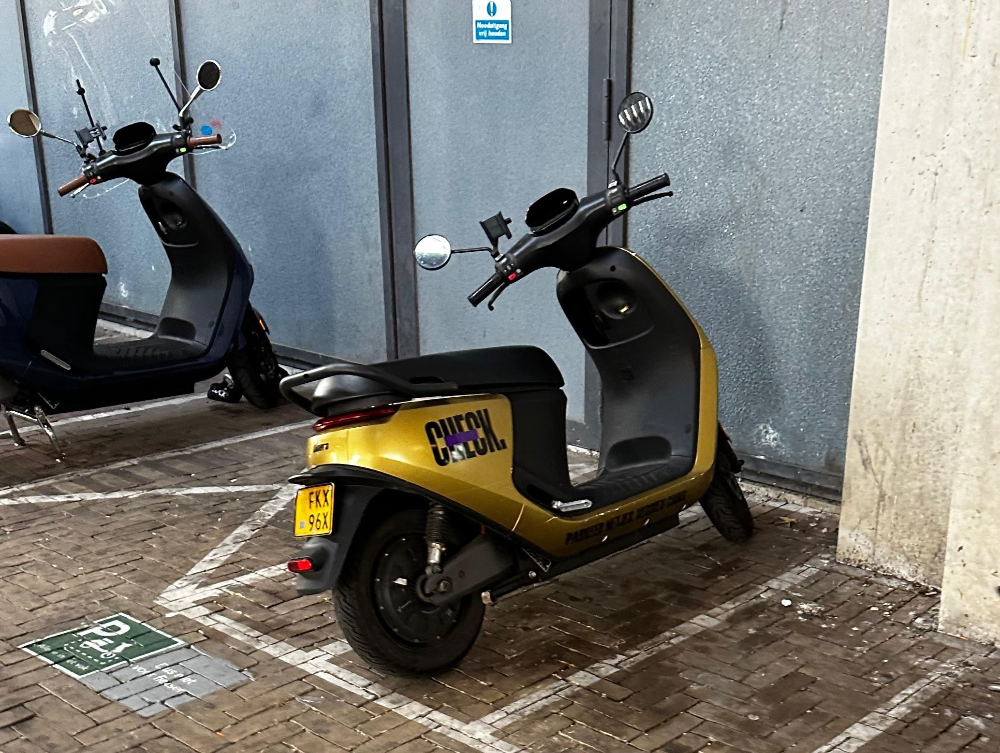
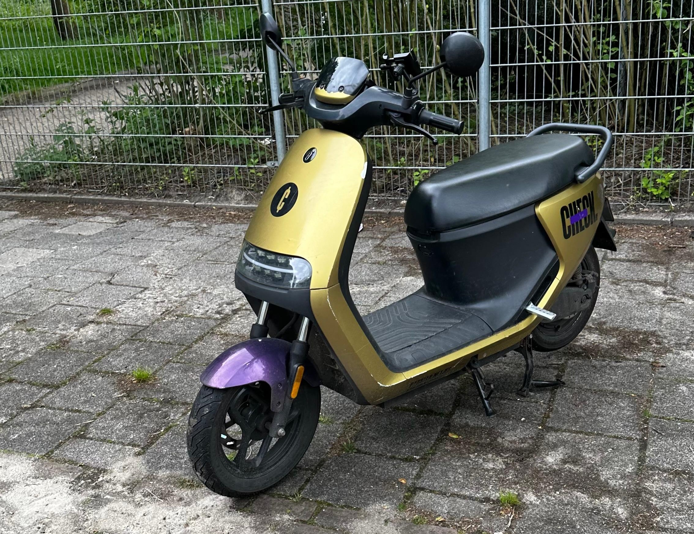
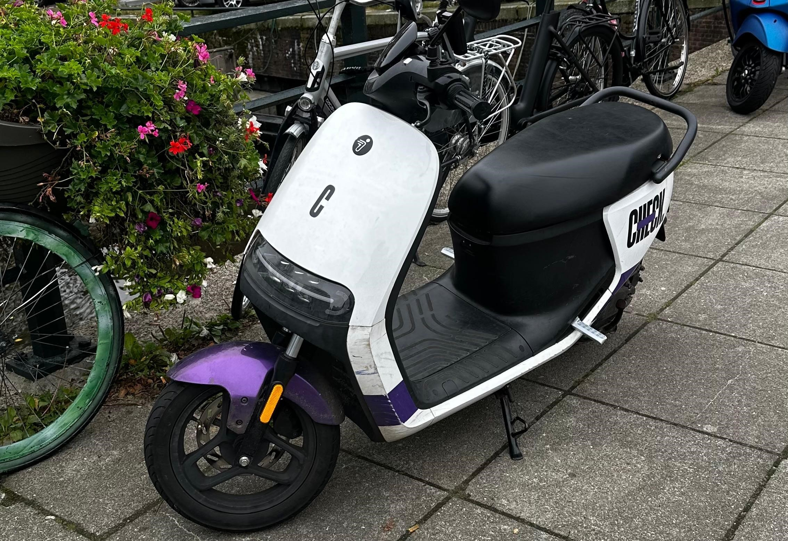

De Beste Deelscooters van Amsterdam
Mijn Ervaring met Check
Voor mij is Check de beste oplossing om van A naar B te komen. Ik ben zeer tevreden over de scooters, klantenservice en het gebruikgemak. Als er bijvoorbeeld geen bussen rijden, kan ik gelijk een Check scooter in de buurt pakken, en daarmee mijn reis vervolgen. Ook kun je gratis ritten verdienen doormiddel van coins.


Wat zijn de Nadelen
Aangezien het een deelscooter is, komt het soms voor dat er helmen ontbreken of dat de spiegel stuk is. Gelukkig kun je in de app het probleem melden en lossen ze het probleem op.